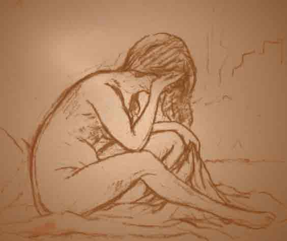

A dor é real: dor emocional = dor física
Oprimeiro passo para perceber que a dor que você sente é real. Não está somente na sua mente. Rejeição é um acontecimento traumático tão forte quanto qualquer dor física que você sente. De fato, a dor da rejeição ativa algumas das mesmas áreas do cérebro que a dor física.
Tem havido vários estudos baseados nos escaneamentos de resson'ncia magnética na última década mostrando que as áreas do cérebro ativadas quando você é rejeitada são as mesmas quando você sofre uma dor física séria, tal como ser queimada ou levar um soco forte. Quanto mais forte a rejeição, pior a dor que você sente. E nada pode amortecer a dor: estas áreas do cérebro são provocadas pela rejeição mesmo se você conseguir alguma outra recompensa (liberdade do seu ex, um novo parceiro, dinheiro) ou até mesmo se você nem mesmo gosta/gostou da pessoa que rejeitou você.
[Se você estiver interessado na pesquisa de ciência, um bom lugar para começar é com os trabalhos diferentes da Universidade de Michigan Ethan Kross e o último Edward Smith da Universidade de Columbia (ex, heartbreak shares similar brain effects with physical pains such as being burned), e da UCLA Naomi Eisenberger (ex., the shared underpinnings of physical and social pain)].
Humanos Chegaram a Acreditar que Rejeição Poderia Levar A Morte
A teoria por trás da dor da rejeição social é que através da história antiga, os humanos passaram a confiar em seu grupo social para as necessidades básicas: comida, água, abrigo, apoio, proteção.  Você precisava de seu grupo social, tribo e família para sobreviver; você não podia sobreviver sozinho. A rejeição social destrói a sua estabilidade e jeito de vida e poderia literalmente ter sido uma sentença de morte durante milhões de anos de vida humana. Então a dor da rejeição é a maneira do seu cérebro humano dizer a você que você está em sério risco se estiver sozinha e que você precisa ser reaceita para sobreviver.
Você precisava de seu grupo social, tribo e família para sobreviver; você não podia sobreviver sozinho. A rejeição social destrói a sua estabilidade e jeito de vida e poderia literalmente ter sido uma sentença de morte durante milhões de anos de vida humana. Então a dor da rejeição é a maneira do seu cérebro humano dizer a você que você está em sério risco se estiver sozinha e que você precisa ser reaceita para sobreviver.
Obviamente não é mais o caso de você literalmente morrer de fome ou sede se você for rejeitado em um relacionamento rom'ntico. Mas o cérebro humano ainda responde deste jeito, o que tem consequências muito profundas para como nós reagimos ao fim do relacionamento.

Todo o mundo reage diferentemente, mas há alguns efeitos muito comuns que são frequentemente relatados nos foros da internet por aqueles cujo relacionamento acabou de terminar.
necessidade avassaladora de ter o seu ex de volta
O seu cérebro está dizendo a você que não há esperança na vida a menos que você seja reaceito pela pessoa que rejeitou você. Não importa quão maravilhosa a sua vida seja e que outras grandes coisas você tem a sua disposição porque você não pode vê-las. Tudo que você pode ser e sentir é a dor da rejeição e a necessidade de reconciliar-se. Você sente que a sua vida acabou se você não estiver com aquela pessoa. Não é racional, não faz sentido, mas o seu cérebro está fazendo você sentir-se deste jeito.
Funções físicas corporais todas bagunçadas
Você não pode dormir mais de uma ou duas horas às vezes, então em outras vezes você não pode fazer nada a não ser dormir por dias seguidos. Você não consegue comer nada por dias, mas então já não consegue parar de comer como se você tentasse achar a felicidade nas calorias. Você não consegue mover-se por um longo tempo, sente-se tão letárgico, mas em outras vezes você está tão ansioso e nervoso e estressado que você não pode parar de mexer-se
Obsessão constante e pensamento non-stop no seu ex-
Literalmente todo segundo de todas as horas de todo dia, você pensa em seu ex. Não importa o que você está fazendo, com quem você está falando, a única coisa acontecendo na sua cabeça que realmente importa é o pensamento non-stop no seu ex.Qualquer coisa lembra você de seu ex e do relacionamento. Quando você realmente acha alguém que está disposto a ouvir o seu monólogo interno sobre o ex, parece bom porque ao falar sobre isto, pelo menos parece que você está fazendo algo para manter-se conectado com o ex e manter isto vivo.
Os sentimentos vão e vêm em ondas.
Às vezes você está tão triste você chora incontrolavelmente por longos períodos, então você se sente totalmente adormecido e sem emoções. Às vezes você está cheio de raiva e rancor do ex, de si mesmo , e do mundo, e outras vezes você está explodindo do mais puro amor incondicional pela pessoa wur partiu o seu coração.
Ódio por estar sozinho mas pouca diversão estando com outros
Às vezes, você não pode ser incomodado para até mesmo notar outras pessoas, enquanto em outras vezes, você se torna um versão malvada de si mesmo gritando e atacando seus amigos e família agressivamente e violentamente. você quer falar todo o tempo sobre o seu ex, o relacionamento e o rompimento. Mas você fica furioso com os outros, você não aguenta estar com outras pessoas, ninguém lhe dá aquele sentimento que você está convencido que precisa e está mais convencido ainda que só pode vir do seu ex.
Perda de significado
Você questiona a vida e em geral a sua vida especificamente. Você não entende o significado da vida. Nada tem sentido.  Você cai nas profundezas do desespero e angústia existencial. você geme que não há razão para fazer qualquer coisa. Em muitos casos, você cai em depressão verdadeira e contempla o suicídio com seriedade porque você simplesmente não imagina o sentido de sua vida sem o ex-Todas estas reações são normais. olhe pelo lado bom: eles afirmam que você está realmente vivo e que você é realmente um humano. ;)
Todo mundo sofre do mesmo jeito: homens, mulheres, gay, hetero
Uma nota para os homens: a dor é simplesmente tão ruim para homens e mulheres. Por causa dos estereótipos sociais e papéis dos gêneros tradicionais, dor do rompimento é mais associada às mulheres. Os homens supostamente são fortes, durões, não são emocionais e não são afetados tanto. "Seja homem: vá a academia , beba cerveja, vá dormir com algumas outras garotas e você estará bem" é o padrão masculino para conselho de homem.
Mas isto é simplesmente bem tolo. Os homens sofrem do mesmo jeito quando eles são rejeitados, como mostrado por ambos a pesquisa científica assim como uma lida rápida pelos posts de foros de relacionamentos.  E tristemente, os homens frequentemente têm até menos apoio de amigos e família precisamente por causa dos estereótipos do papel do gênero. Tudo aqui se aplica igualmente a homens e mulheres.
E tristemente, os homens frequentemente têm até menos apoio de amigos e família precisamente por causa dos estereótipos do papel do gênero. Tudo aqui se aplica igualmente a homens e mulheres.
Também digno de nota é que tudo aqui também se aplica aos relacionamentos do mesmo sexo assim como aos relacionamentos do sexo oposto. A dor de ser rejeitado não conhece limites baseado em gênero ou orientação sexual. a Rejeição fere não importa quem seja.